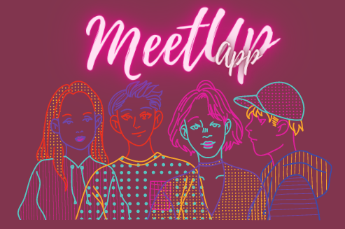
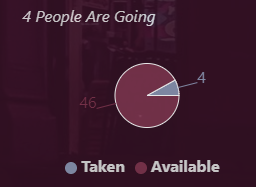

Meetup App

Description
MeetUp application created by create-react-app, utilizing a serverless backend
with AWS Lambda and fetching events from the MeetUp API.
The app was built into a Progressive Web Application (PWA) and passed
Lighthouse's PWA checklist.
This process required gaining experience
with Continuous Delivery and Intergration, and Object-Oriented Programming.
The app has offline availability with the help of a service worker, includes
data visualisation (number of events) and uses the OAuth2 authentication flow.
The API calls are made with Axios and use asynchronous functionality.
The app used Atatus for Application Performance Monitoring (trial version)
and it was part of the CF Full-Stack Web Development course.
See website
(Requires MeetUp account.)
See code on GitHub
Testing

The aim of this project was to learn different ways of testing and included aspects of both Test-Driven Development and Behavior-Driven Development:
- Unit Testing
- Integration Testing
- Acceptance Testing
- End-to-End Testing.
Tools used:
- Enzyme
- Jest Cucumber
- Puppeteer.
User stories
The project brief required the following user stories to be fulfilled:
- As a user, I would like to be able to filter events by city so that I can see the list of events that take place in that city.
- As a user, I would like to be able to show/hide event details so that I can see more/less information about an event.
- As a user, I would like to be able to specify the number of events I want to view in the app so that I can see more or fewer events in the events list at once.
- As a user, I would like to be able to use the app when offline so that I can see the events I viewed the last time I was online.
- As a user, I would like to be able to add the app shortcut to my home screen so that I can open the app faster.
- As a user, I would like to be able to see a chart showing the number of upcoming events in a city by date so that I know on which days I can attend Meetup events.
Key features
Extracted from the user stories above, the following requirements were laid out:
- Filter events by city.
- Show/hide event details.
- Specify number of events.
- Use the app when offline.
- Add app shortcut to the home screen.
- View a chart showing the number of upcoming events by date.
If the required data is available in the MeetUp API, the app renders a pie chart displaying the number of available/taken spots.
Updates
- Create consistent styling (background image, logo, personal logo, titles, color, scrollbar) ✓
- Improve pie chart placement (only when "Details" are visible) ✓